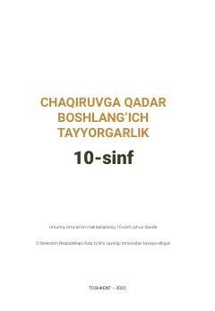

CQ10-sinf o‘quvchilari uchun harbiy-vatanparvarlik va boshlang‘ich harbiy tayyorgarlik bo‘yicha o‘quv qo‘llanma.
Ushbu darslik umumiy o‘rta ta’lim maktablarining 10-sinf o‘quvchilari uchun mo‘ljallangan bo‘lib, harbiy-vatanparvarlik, harbiy xizmat asoslari, o‘qotar qurollar bilan ishlash va fuqaro muhofazasi bo‘yicha nazariy hamda amaliy bilimlarni o‘z ichiga oladi. Kitob O‘zbekiston Respublikasi Xalq ta’limi vazirligi tomonidan tavsiya etilgan va harbiy tayyorgarlikning asosiy yo‘nalishlarini qamrab oladi.